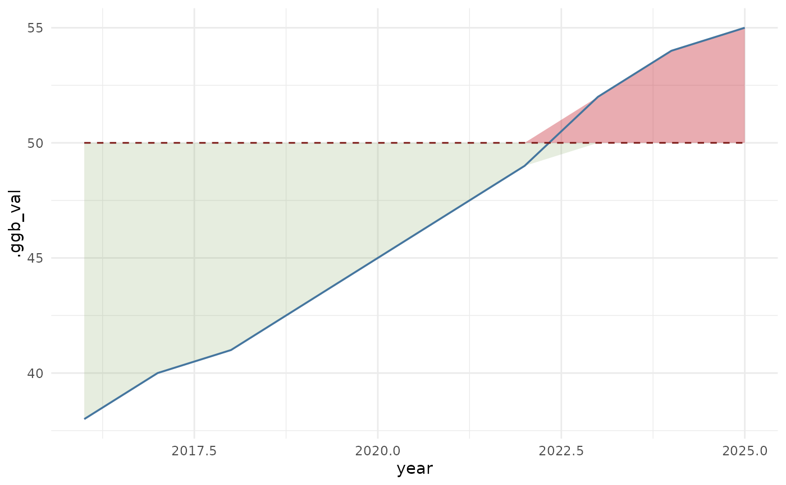

The core layer of the package. Given a value trajectory over an ordered axis
(usually time) and a boundary, geom_boundary() shades the region where
the value overshoots the boundary and, optionally, the slack below it, then
draws the value line and the boundary line on top. The boundary may be a
single number (a fixed ceiling) or a vector the same length as the data (a
boundary that itself moves over time).
Usage
geom_boundary(
data,
x,
value,
boundary,
show_slack = TRUE,
over_fill = "#c1121f",
slack_fill = "#749c4c",
over_alpha = 0.35,
slack_alpha = 0.18,
value_colour = "#44759e",
boundary_colour = "#7a1512",
value_size = 0.6
)Arguments
- data
a data.frame.
- x, value, boundary
column names (character) in
data.boundarymay instead be a single numeric value for a fixed ceiling.- show_slack
draw the slack region below the boundary (default TRUE).
- over_fill, slack_fill
fills for the overshoot and slack regions.
- over_alpha, slack_alpha
alphas for those regions.
- value_colour, boundary_colour
line colours.
- value_size
line width of the value trajectory.
Details
The moving boundary is the point of the package. Doughnut Economics and the
planetary-boundaries framework draw the safe threshold as a fixed ring; a
complex-adaptive-systems and dynamic-capabilities reading treats it as
endogenous, a function of the system's own adaptive capacity, so it belongs
in the plot as its own series rather than as a constant. Passing a vector to
boundary puts that choice on the page.
Returns a list of ggplot2 layers, so add it to a ggplot() and combine it
with any scales, facets, and themes as usual. See boundary_plot() for a
one-call themed wrapper, and doughnut() / conch() for the polar snapshot
and the expressive spiral companions.
Examples
df <- data.frame(year = 2016:2025,
hhi = c(38,40,41,43,45,47,49,52,54,55),
cap = 50)
library(ggplot2)
ggplot(df) + geom_boundary(df, "year", "hhi", "cap") + theme_minimal()
